Fume: walk through the link
“Keep FUME’s current playground as the default. Add three optional, untimed puzzles where players shape actual simulated smoke using a small supplied toolkit.”
Earlier requests
“Still blurry garbage … Why just stripes though?”
“why the fuck is smoke zone limited below ceiling?!”
“the wall is too close … inspiration, not literal … more space in the room”
“Textures/ final look are still cheap ugly shit … THIS IS WHAT IT SHOULD FEEL LIKE!!!”
“Start with candle tool, not hand”
“Dragging on touch pad should move the room by default”
Open the local Fume preview
Local only · 13 October 2026codex/fume-atmosphere · a0cda91Desktop and phone inspected
People: Petr returning to the simulation he already liked, and a new visitor. The same local playground serves both. The latest walkthrough adds optional puzzles and verifies that returning restores the original room, tools and smoke.
Optional smoke-routing challenges
“Keep FUME’s current playground as the default. Add three optional, untimed puzzles where players shape actual simulated smoke using a small supplied toolkit.”
13 October · code a0cda911440×900 desktop · 390×844 phoneOriginal solver and kept preset
Try the local playground. Choose Challenges, then any puzzle. These captures follow a new visitor starting with Candle and muted sound, and a returning local player whose two placed candles, Hand selection and Geometry room remain parked while a puzzle runs.
Playground → choose a route
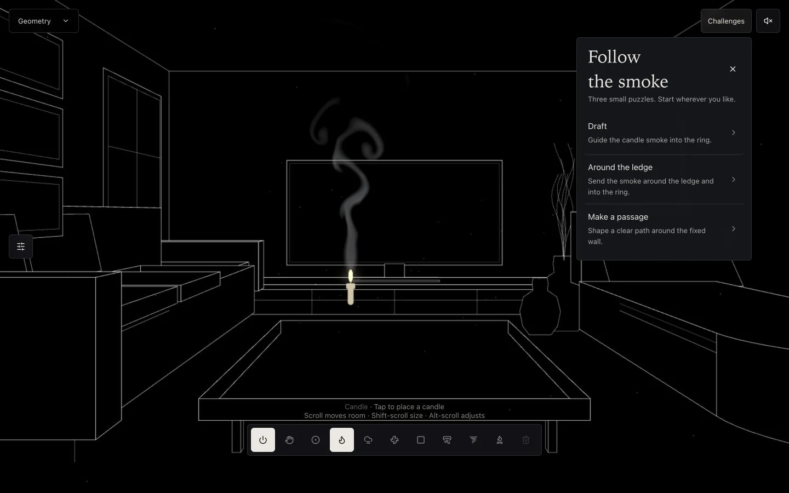
All three puzzles are available immediately.
Sees: the existing playground, with one Challenges button beside mute. Taps: Challenges, then Draft, Around the ledge or Make a passage. Could get stuck: completion marks are local to this browser; moving to another device does not carry them.
Place → move → aim
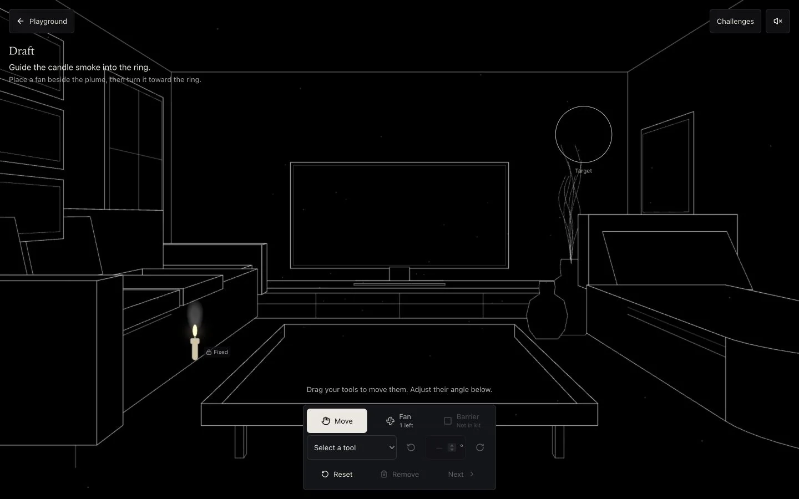
Fixed source and visible ring · original simulated smoke
Sees: a fixed candle, a destination and a finite kit. Taps: Fan, then the room to place an active copy; drag a placed tool to move it. The degree input and two 44px angle buttons provide explicit aiming. Could get stuck: placing all supplied tools disables additional placement; Remove refunds a movable tool. Fixed pieces remain locked.
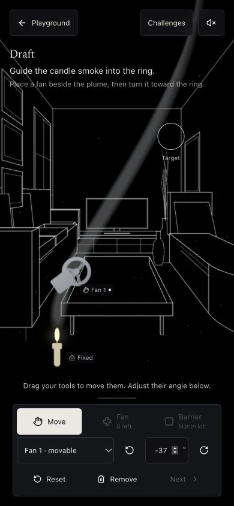
Move preserves the angleSmoke reaches the ring → completion → retry
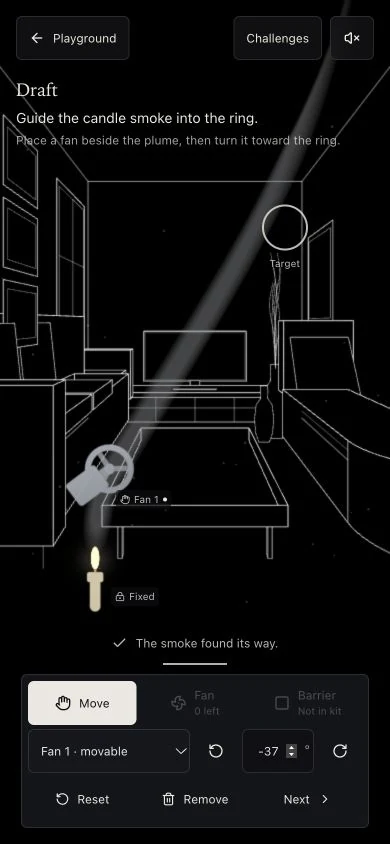
Actual smoke · completed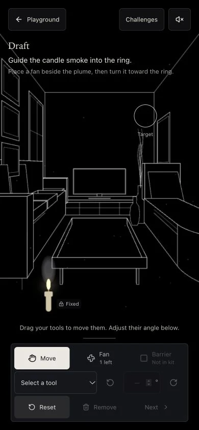
Free retry · same controlsSees: a small settling bar when visible smoke remains in the target. After sustained detection: “The smoke found its way.” Taps: Reset for a free retry, Next for the next puzzle, or Playground. Could get stuck: a faint trace or isolated dense spot does not count. The field must visibly occupy enough of the ring for 1.5 seconds; that duration is a detection rule, not a player timer.
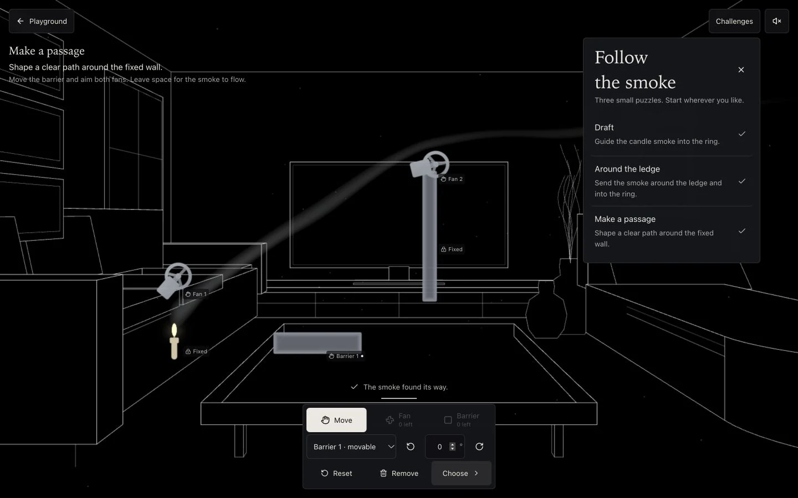
Choose after Passage · completion marks
Return to the parked playground
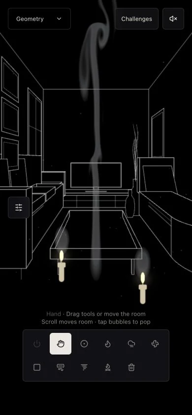
Before · two candles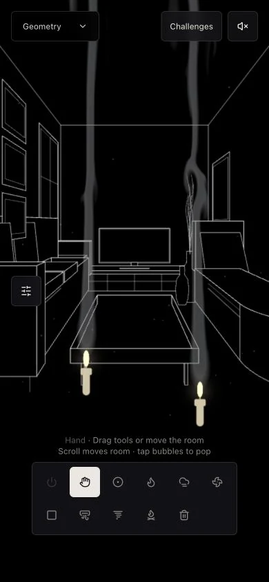
Return · same playgroundSees: the original arrangement and room, continuing from its parked smoke. Taps: continue playing. Could get stuck: resize preserves the logical domain through letterboxing; it does not stretch or recreate the field. A lost GPU connection asks for a reload, which cannot promise the exact former smoke state.
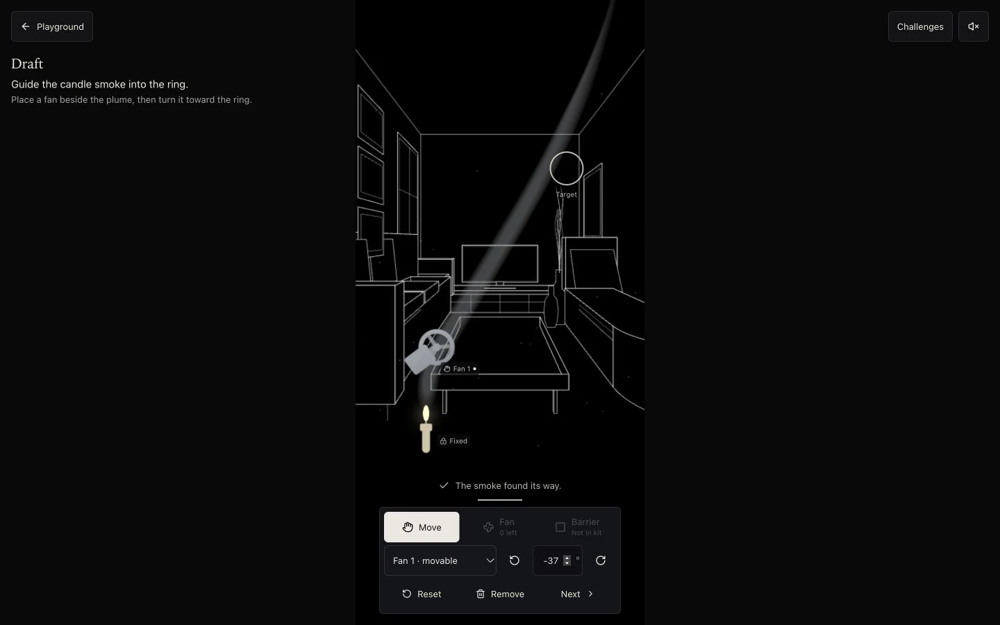
Same portrait field · desktop letterbox
If a challenge cannot allocate its smoke field
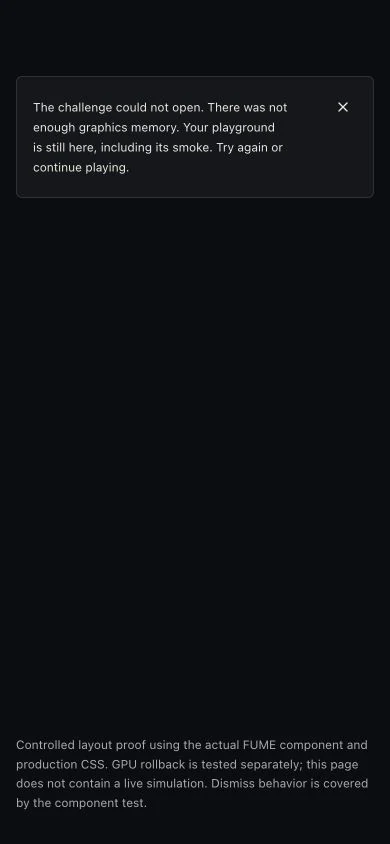
Controlled notice layoutSees: a nonfatal message while the original playground returns. Taps: Dismiss message, then continues playing or tries Challenges again. Could get stuck: a lost GPU device still requires a reload and cannot promise exact smoke restoration. This capture checks the actual component with supplied message props; native GPU fault behavior is evidenced separately.
Bounded native allocation and first-use validation faults, an injected out-of-memory result and partial allocation failure all preserve the original 5,734,400 bytes, parity and seeded IDs. Pending fields are withheld from presentation and probing; failed resources are released and late results ignored. Native and library error arrays are empty. No hardware memory exhaustion was attempted.
Five frictions corrected
- Unclear objective. → Visible destination, one route sentence, placement hint and lock labels.
- Difficult touch aiming. → Separate movement and angle controls, 44px buttons and keyboard input.
- Misleading completion. → Actual smoke-opacity sampling, fill and coverage thresholds, sustained settling and stale-result rejection.
- Shifting controls. → Fixed three-row dock and reserved feedback area, measured through placement, selection, completion and retry.
- Lost playground state. → Same World, accumulator and GPU Fluid buffers restored before advancing again.
All three puzzle layouts have actual-GPU solutions at both logical sizes. Six calibration receipts store exact positions and detection output. The GPU probe receipt records unchanged parked buffers, empty/faint/circular samples and probe overhead: p95 host submission 0.452 ms, asynchronous result 0.996 ms over 100 samples in an idle harness. Disabled probing performs zero dispatches and reads. These measurements do not establish whole-app frame rate or physical touch hardware acceptance.
All 85 focused tests, typecheck, scoped lint, production compilation and the preservation guard passed. Independent finish review: ship for local review of this feature. Read the implementation and preservation boundary, validation receipt and design documentation check. This work is local; deployment remains outside the approved plan.
A mechanics reference that stays available
The complete Game Mechanics Compendium is retained separately for personal reference: untouched source, an offline derivative using local fonts, 269 mechanics, 21 categories and the original inline animations. Search and category filtering operate without automatic network dependencies.
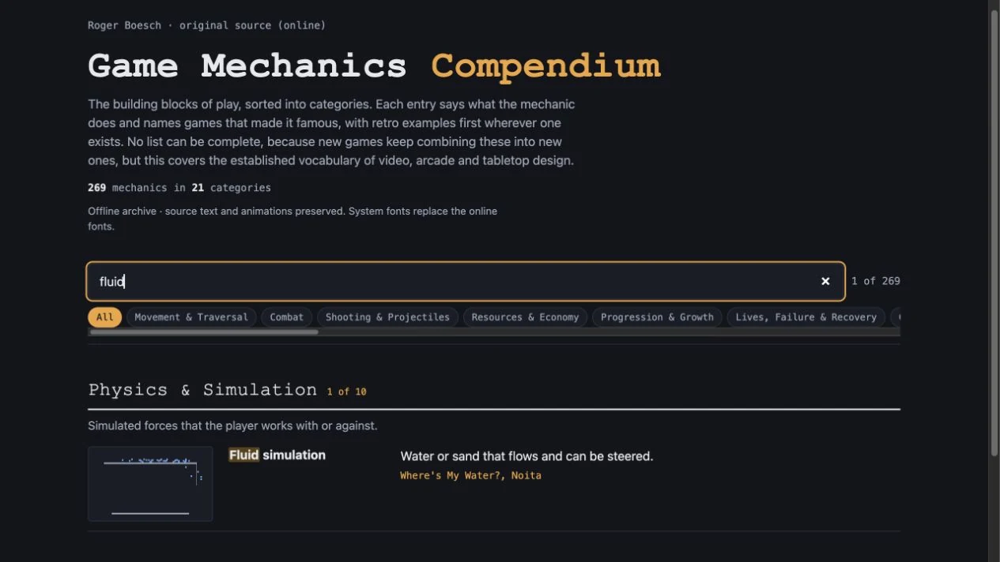
Offline search · Fluid simulation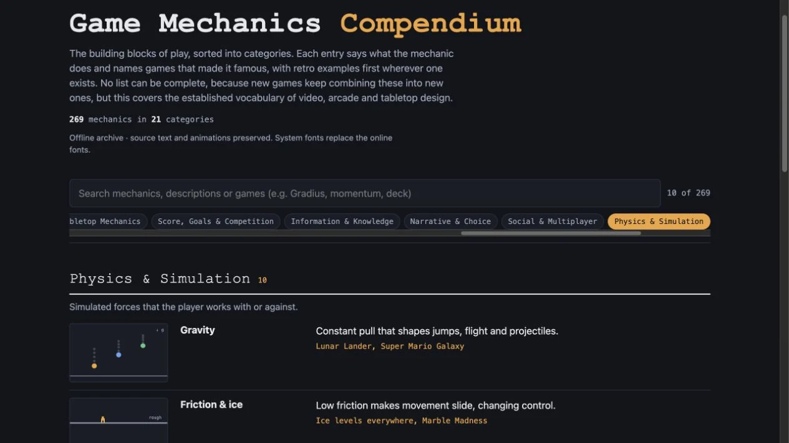
Category filter · ten examplesSees: the preserved reference with search and filters. Taps: a category or searches a mechanic. Could get stuck: external reference links still need the internet; the descriptions, catalog and animations remain local. The archive is not bundled into FUME’s runtime.
Skill-manager installed only dev:game-mechanics. A fresh independent agent discovered it and used the category references for a new design question. The skill reads existing product intent first and proposes concrete player actions, feedback and completion conditions with source links. The source capture, SHA-256, integrity checks, browser evidence and deployment receipt live in ~/calm/skills/library/dev/game-mechanics/.
From Petr: open Challenges in the local preview and try a route; no setup or deployment action is needed.
More room, full-height smoke, a different Cosmos
Code e40fc73 · 12 October 2026 · local browser · desktop, phone and Petr's native preview width
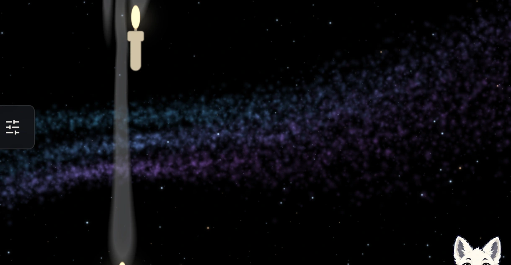
Before · Petr's screenshot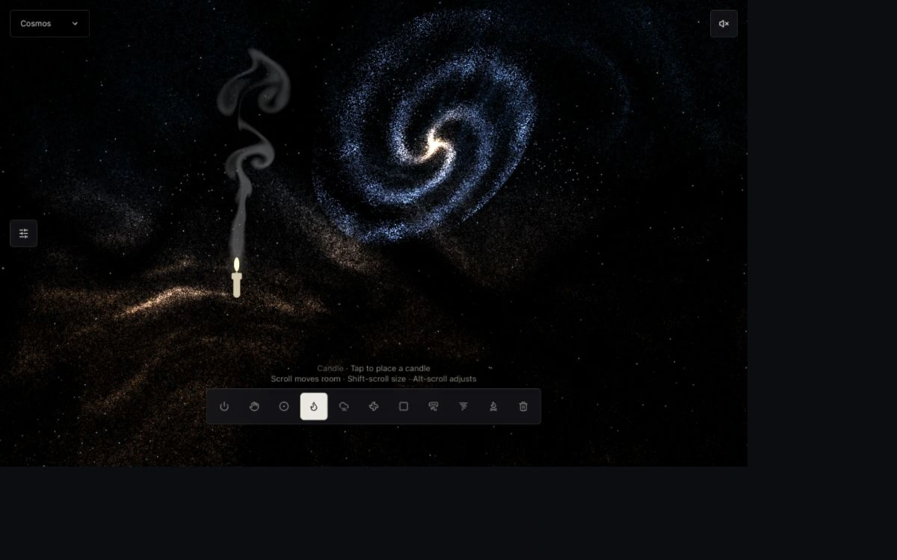
After · actual running CosmosSees: A spiral galaxy, dark branching cavities through a connected cloud field, and individual stars at different distances. The soft parallel bands are removed. Returning Petr keeps his chosen style; a new visitor starts in Geometry with Candle active and sound off.
Does: Opens the same preview link, chooses Cosmos and drags with Hand or scrolls normally to move the scene. Near stars move more than distant stars.
Could get stuck: Cosmos is authored procedural art. Its diffuse emission is soft, while stars and bright grains retain detail; a real 8K export establishes resolution, not photographic realism or Petr's visual acceptance.
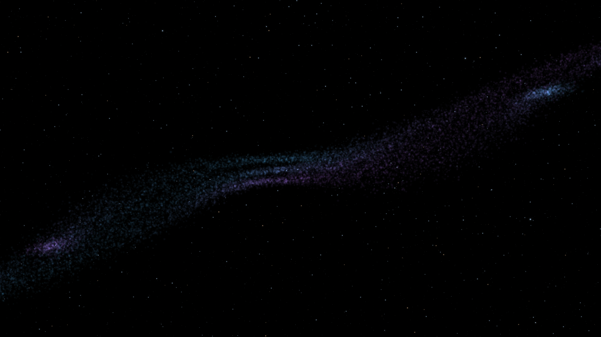
Native 8K source · click for lossless PNG
The runtime shader rendered 204,000 samples directly at 7680 × 4320: 14,000 individual stars and 190,000 emission/galaxy grains. The app renders at its surface size and caches a stationary sky. It does not load this export as its background. Source and generation record.
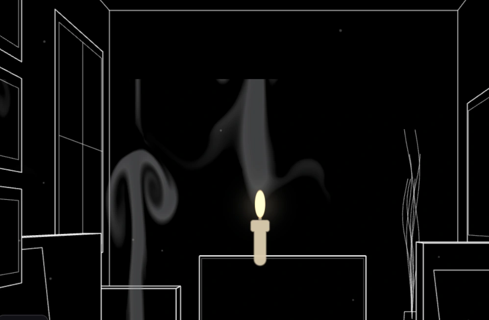
Before · false ceiling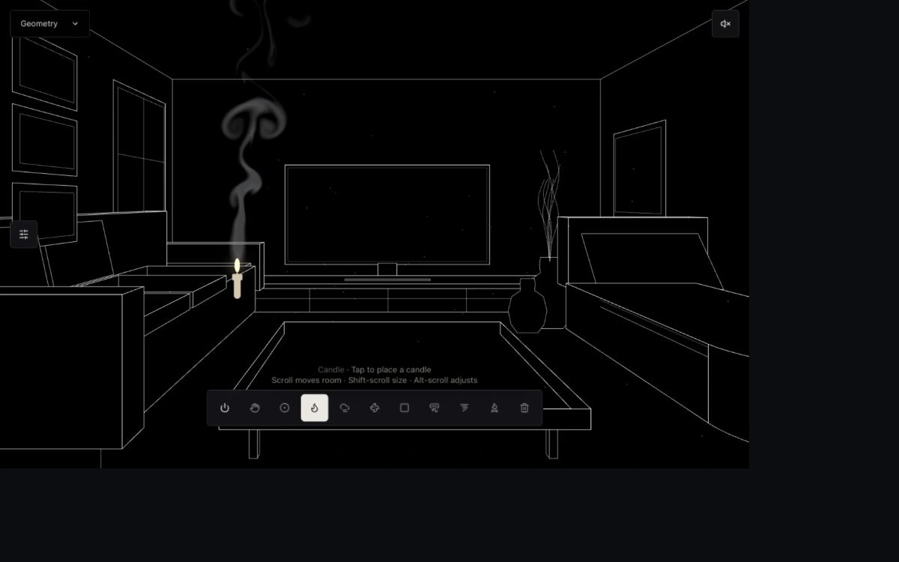
After · smoke continuesSees: The original live smoke can cross the line where it previously disappeared. The invisible clipping box belonged to an older room projection and did not match the furnished contour drawing.
Taps: Candle, then the canvas. With the held effect off, the placed candle keeps emitting. Wand still creates a round smoke-filled circle.
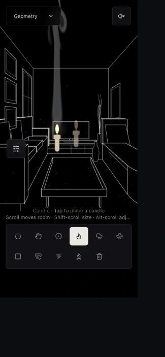
Phone · full-height smoke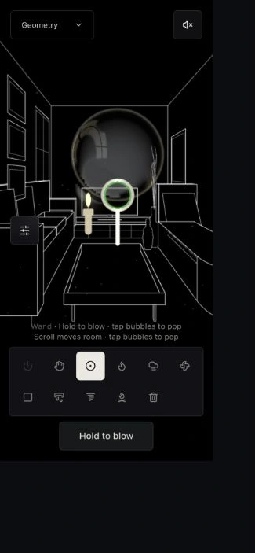
Wand · round bubble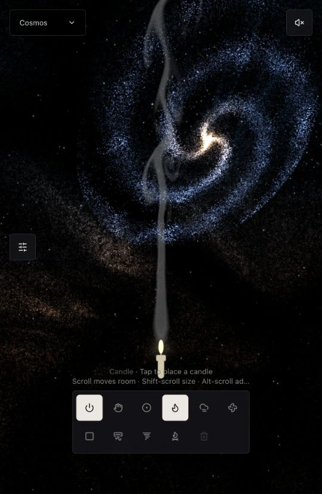
Cosmos · native previewCould get stuck: Furniture contours are decorative; they do not become new smoke collision bodies. The obsolete Scene-plane slider is removed because it no longer controlled this full-canvas view. Smoke parameters remain available.
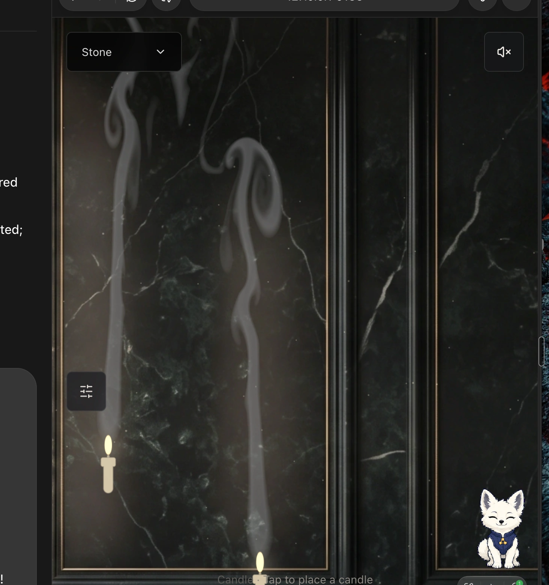
Before · wall too close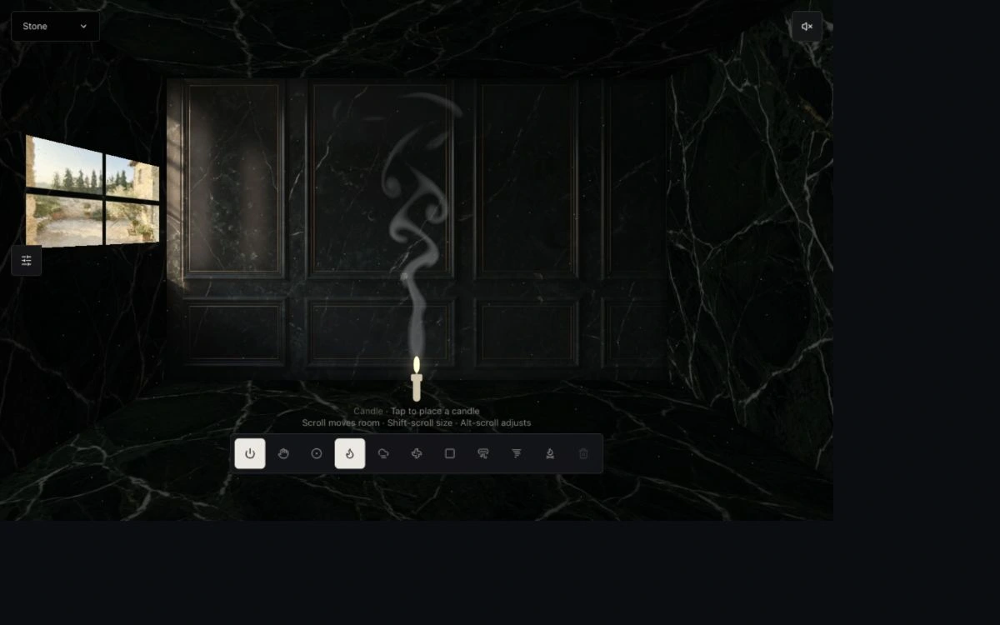
After · more spaceSees: The authored back wall sits farther away. Actual side walls, floor and ceiling carry generated appearance textures; the left window lies on the side wall. The reference supplies the mood and material richness, while this room has its own deeper framing.
Does: Selects Hand and drags empty space. The wall and nearer window move by different amounts as the camera changes position. Ordinary two-axis scrolling also moves the room; reversing responds immediately at the camera limit.
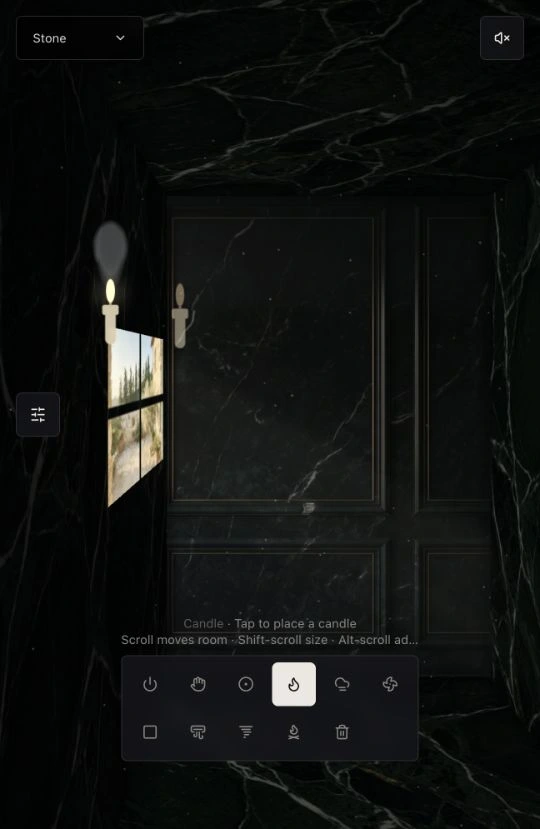
Before drag · native preview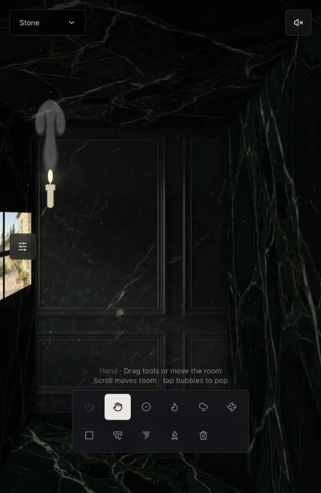
After drag · camera moved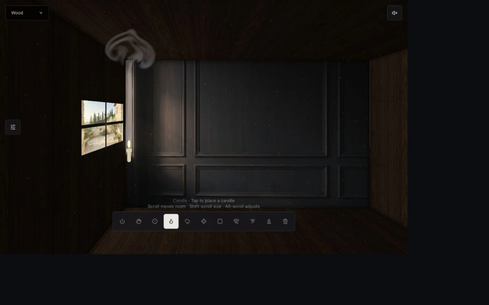
Wood · generated walnut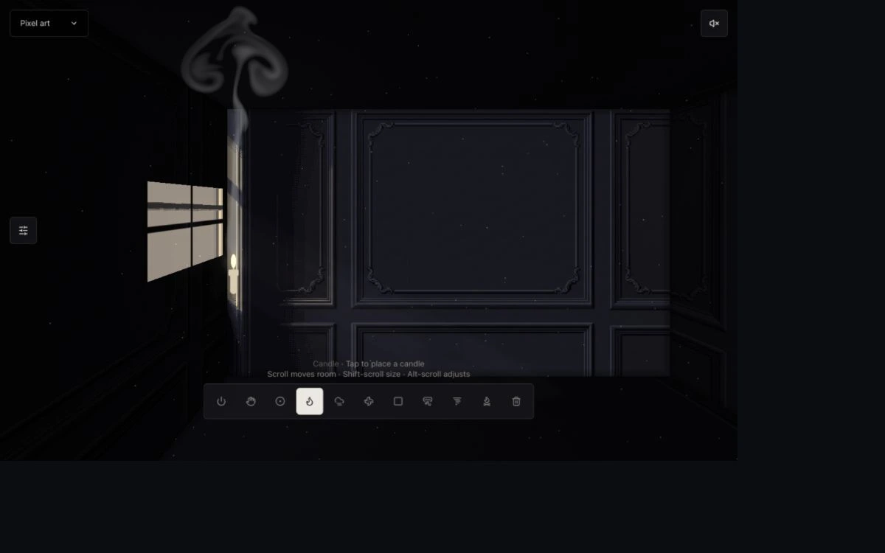
Pixel art · fine panelingCould get stuck: These are simple perspective interiors. Their textures are generated appearance images with some baked light, rather than measured albedo, normal and roughness maps. Pixel uses a window-free region of its fine panel artwork; the rejected large brick/parquet atlas stays unused.
The five corrections in this build
- Cosmos consists of stripes. A spiral galaxy, connected turbulent emission, dark channels and continuous star depth.
- Cosmos is blurry. Fine native-resolution grains and star cores, separate diffuse coverage, and a directly rendered 8K source.
- Smoke stops below the ceiling. Full-canvas isotropic smoke/pointer projection; the obsolete hard clipping rectangle is removed.
- The room does not respond to movement. Actual bounded camera movement, faster coasting and immediate reverse response. Default 80px drag → 36px back-wall motion in projection tests.
- The wall is too close. A farther back wall with side walls, floor, ceiling and a perspective window; Depth, width, height and framing controls remain functional.
All 46 focused tests, typecheck, scoped lint, production compilation and the original-smoke/approved-ray preservation guard passed. Browser warning/error log was empty after the final material-room reload. Desktop and phone captures were inspected; see validation and scope.
The responsive override requested 1440×900 and 390×844; the browser's display scale reported 1200×750 and 325×703 CSS pixels. Those raw captures include the browser's unused edge area. Native preview captures are 540×829 and fill the frame. No whole-app frame-rate or physical-trackpad comfort measurement is claimed. Everything here is local code; no deployment occurred.
Independent visual review: ship for local review of these three corrections. The reviewer inspected all fourteen current captures and the supplied before images. Cosmos remains visibly stippled, and Stone has prominent foreground veins; these are recorded quality limits, not a claim of Petr's acceptance.
From Petr: Judge the new visual feel in the preview. There is no manual setup step required.
Earlier sections retain previous captures and then-current claims. The new Cosmos replaces the earlier folded bands, and the perspective material rooms replace the close environment plates.
Cosmos gains depth; controls hold their place
Code 2a4204d · actual local browser · returning Petr and a new anonymous visitor
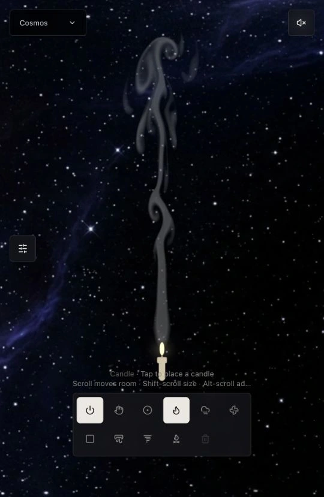
Before · the previous Cosmos picture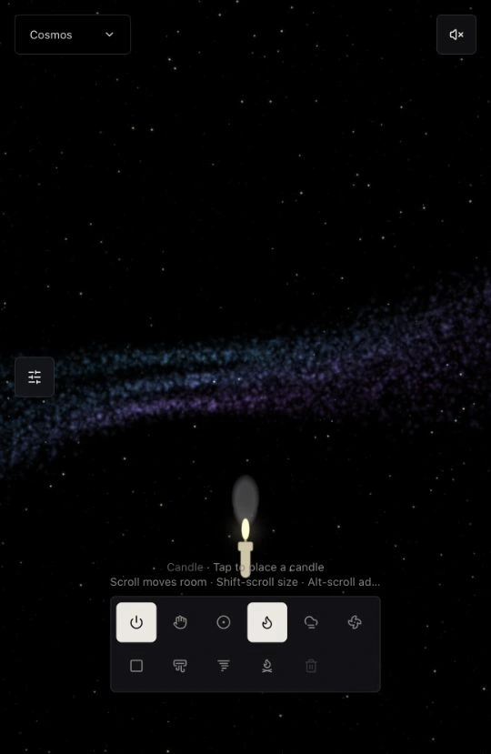
After · direct entry into the canvasSees: Sharp individual stars and folded blue-violet galactic filaments. Returning to Cosmos restores the selected sky; a new visitor starts in furnished Geometry. Candle and its held effect start active, and the sound button says “Unmute”.
Does: Opens the link and starts placing tools immediately. The title screen and Begin action are removed.
Could get stuck: Tools still use icons with hints. The power switch affects the held device; click placement always creates an active copy. For Hand and Wand the switch stays in its slot but is disabled.
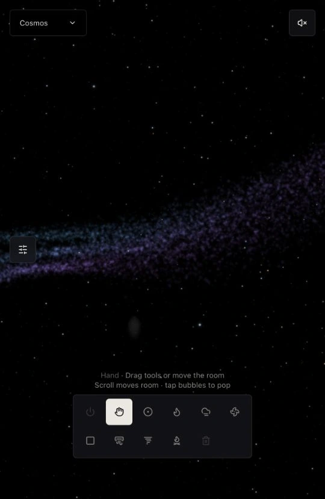
Drag · depth-dependent movement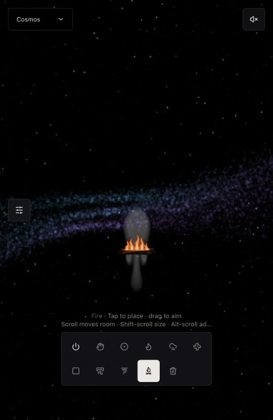
Fire · placed, held effect off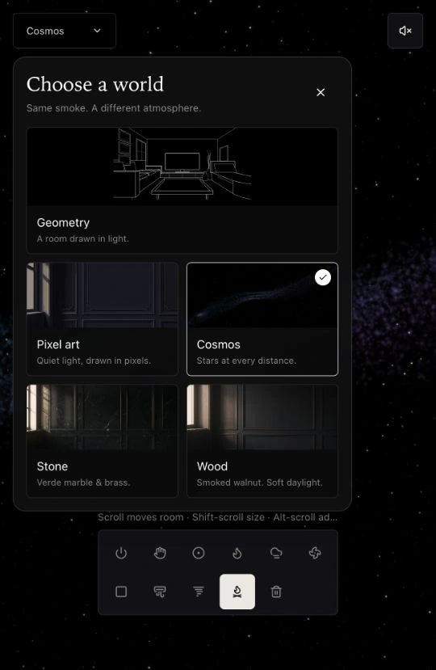
Picker · actual new skySees: Near and distant stars occupy continuous depths, rather than sharing one moving plate. Hand dragging or ordinary trackpad scrolling moves the scene; the star volume follows the same direction as the preserved smoke/device plane. Fire stands upright and has five independently curling tongues over charred logs and glowing coals.
Taps: Fire, then the canvas to place it. Turning the held effect off leaves that placed fire burning. Switching among all nine tools leaves the bottom grid, hints and action row at identical positions.
Could get stuck: Detailed tool modifiers remain in hover descriptions. An empty action slot is reserved for Wand's Blow button to prevent layout shifts. Fire remains a live procedural illustration; the smoke solver has not been replaced with a photographic or 3D fluid renderer.
Native 8K render · click for the lossless 7680 × 4320 source
This earlier revision rendered a 52,000-point 8K source. The linked export and generation record now show the latest 204,000-sample revision above; the captures in this section retain the earlier scene. The app reuses a stationary native-resolution sky. Generation record.
The five reported problems and their fixes
- Flat, soapy Cosmos. 52,000 points with continuous world-space depth, native pixel rendering and an actual 8K original.
- Mismatched pill-shaped buttons. 44 × 44 icon controls, 6px corners and matching Settings/mute controls; the labeled selector shares their height.
- Dock jumps when selecting tools. Fixed slots for power, hints and Blow. All nine tool selections have identical measured bounds at each tested width.
- A title screen blocks an open simulation. The link opens directly to the canvas with Candle active and audio off.
- Cheap sideways Fire. Upright default, five animated flame tongues, hot cores, charred logs and pulsing embers; original emission dimensions and power retained.
Production compilation, typecheck, scoped lint, 37 focused tests and the original-smoke/approved-rays guard passed. Independent review found and fixed reversed star movement and an inert Cosmos control. Final browser error/warning log: empty. See validation and all measured tool layouts.
Responsive overrides requested 390 × 844 and 1440 × 900; the browser's existing display scale reported 325 × 703 and 1200 × 750 CSS pixels. Normal 540 × 829 preview captures are shown above. Both dock layouts were inspected. No frame-rate benchmark or physical-trackpad comfort measurement is claimed. This is local code, not a deployment.
The sections below retain the earlier walkthrough and its then-current behavior. Begin and the former image-based Cosmos described there are superseded by this section.
Geometry: the room Petr meant
Code 26efd61 · both desktop and phone inspected in the running app
 Reference · supplied by Petr
Reference · supplied by Petr Before · the misinterpretation
Before · the misinterpretation After · furnished contours at 1440 × 900
After · furnished contours at 1440 × 900
Sees: A furnished architectural drawing. Black surfaces, fine white outlines, framed window panes, a sofa and low table, a TV console, a curved chaise and two vessels with spare stems. The supplied stock reference is not used as the background; the scene is original geometry.
Taps: Begin. Candle is already selected and sound is off. Click places an active candle; “Held tool off” leaves that candle emitting.
 Phone · placement checked
Phone · placement checked Scroll · contours move
Scroll · contours move Picker · matches the scene
Picker · matches the sceneSees: The phone layout keeps furniture visible and the TV horizontal. Geometry's thumbnail is drawn from the same model as the room. Wood still renders when selected; switching back restores the contours.
Does: Ordinary scrolling moves the camera. The old smoke solver, bubble dynamics and corrected round-bubble projection continue unchanged.
Could get stuck: Furniture is part of the visual background; it does not become a smoke obstacle. Use the existing Block tool for that. The held-off candle preview remains dim at the pointer. Hardware trackpad feel and overall frame rate were not benchmarked.
Five frictions → fixed in this build
- A wire box instead of a room. → Furnished perspective composition matching the reference's subject.
- Too little readable detail. → Cushions, tabletop and legs, console divisions, wall frames, vessels and stems.
- The background's visual language was wrong. → Thin white contours, black surfaces and outlined window panes.
- Narrow screens lose the composition. → Reframed furniture and a landscape TV. The inspection also corrected obscured vases.
- The picker showed a different scene. → A complete, uncropped preview generated from the actual contour drawing.
All five are present in local revision 26efd61. 31 focused tests, production build, typecheck, scoped lint and smoke-preservation check pass. Browser error/warning log was empty.
The contour image is cached while the camera is stationary; a regression verifies one upload across 600 frames and release of old images on resize. See validation and updated brief. The changes are committed locally and ready to open without additional setup; they have not been pushed or deployed.
Earlier walkthroughs follow. Their screenshots show previous Geometry backgrounds and are retained as history.
12 October: round bubbles, quiet start
Local code revision 3aa5022 · 390 × 844 and 1280 × 720
“Make sound off by default”
“I think you broke the bubbles”
 Before · reported distortion
Before · reported distortion After · round and muted
After · round and mutedSees: Sound is off on every fresh load. The sound button says “Unmute”. Geometry bubbles stay circular on narrow screens.
Taps: Begin, choose Wand, hold to blow. Unmute enables sound; Mute turns it off again.
Cause and fix: Room width and height independently stretched the simulation plane. The failing regression reproduced a 3.14:1 bubble at 390 × 844. One shared scale now aligns the shader, fluid image and pointer mapping. Bubble dynamics, smoke settings and accepted ray functions were not changed.
 Desktop · same proportions
Desktop · same proportionsVerified in the running app at desktop and 390 × 844. Default mute and both toggle directions checked; no console errors. All 29 focused tests, typecheck, scoped lint, preservation check and production build passed. The five earlier walkthrough fixes below remain in place. Follow-up validation.
1. Open → Begin with a candle
 New visitor · Geometry
New visitor · Geometry Begin · tools visible
Begin · tools visibleSees: The default is a black room with white outlines, including the window. Candle is selected; its held effect is on. There is no pre-placed shelf or collection of bubbles.
Taps: Begin clears the title. Returning visitors get their chosen background after loading.
Could get stuck: The 11 October images below predate the projection correction. The 12 October follow-up above fixes the widened devices and oval bubbles; all styles now keep equal scale on both axes.
2. Click → leave an active candle
 Placed tools remain active
Placed tools remain active
Sees: One “Held tool on/off” switch. No Follow/Pin choice.
Taps: Click anywhere to place a copy. Switch the held tool off: the placed candles keep emitting. Click again to place another active copy. Hand moves existing tools; Wand still blows and pops circles.
Could get stuck: The icon meanings still rely on their short hints. On a phone all controls wrap into two reachable rows. The held-off pointer preview stays visible and dim so placement is predictable.
3. Two fingers → move the room
 Scroll pans the room
Scroll pans the room
Sees: “Scroll moves the room” under the current tool.
Does: Ordinary horizontal and vertical trackpad scrolling moves the camera with any tool selected. Shift/Alt deliberately adjust tool size or aim. Ctrl/Meta scrolling is left to native zoom. Hand drag remains available.
Could get stuck: Automated browser scrolling proves the event route and visible camera response. It does not measure the feel of Petr's physical trackpad. Photo environments have bounded pan, rather than unrestricted travel through a reconstructed room.
5. Repeated tiles → the reference's composition
 Before · rejected tiled corridor
Before · rejected tiled corridor Now · composed empty wall
Now · composed empty wallThe earlier approach treated the complaint as insufficient texture detail. That was wrong: the depth, busy floor, repeated panels and scale were also wrong. This pass uses the actual FUME reference to generate empty background compositions. Smoke, tools, bubbles and the accepted rays remain live.
Geometry stays the explicitly requested default. The other room styles follow the image's intimate framing. No claim that the original interactive smoke now equals the still image's photographic smoke is made.
Five frictions → changes in this build
- Wrong composition despite richer tiles. → Shallow, reference-conditioned room images replace the tiled corridor in Pixel art, Stone and Wood.
- Styles hidden in the lab and hard to compare. → A visible image picker with five clearly named worlds and mobile sizing.
- Hand on entry; Pin confused placement and emission. → Active Candle on entry, click always places, one independent held-effect switch.
- Trackpad scrolling changed the effect. → Plain two-axis scrolling pans; explicit modifiers adjust tools.
- Saved styles produced reload errors; failed assets stayed failed. → Shared initial markup, saved settings loaded before start, bounded asset retries, stale-result protection, cached textures and image pan that keeps every visible edge inside the smoke field.
| Step | Before | Now |
|---|
| Open | Hand and seeded tools | Candle, held on, empty Geometry |
| Place | Follow/Pin modes | Click always places; emission toggle independent |
| Move | Wheel changed depth or device | Ordinary scrolling pans |
| Choose a look | Busy repeated materials inside a deep box | Distinct composed environments and direct image picker |
| Return | Saved-style hydration mismatch | Restored style with identical initial markup |
Evidence, generation and practical limits
The production build, 28 focused tests, typecheck, scoped ESLint and the preservation guard passed. All five styles rendered in the local browser; the five phone picker images loaded, Wood and Cosmos survived reload, and no new shader or JavaScript errors appeared in the final walkthrough. Independent review found and fixed panned-edge emission and stretched-image-border bugs. See validation output.
The original solver, numerical settings, smoke shader helpers and frame timing are protected by a source comparison against 1864ab7. Startup/tool behavior and image pointer mapping are explicit exceptions. The accepted window_mask and volume_light functions remain byte-identical. No second renderer or fluid engine was added.
Art route: Gemini on the confirmed msuorange Google AI Pro account; explicit user permission covered the FUME reference upload. Provenance records actual model evidence, dimensions, originals and prompts. Generated images are appearance assets, not calibrated material scans. The unfunded Higgsfield batch submitted zero jobs and charged zero credits.
There is no admin screen or live deployment to verify. The only manual acceptance is Petr deciding whether the composition now feels right. Frame rate has not been benchmarked, and no claim of fixing every inherited behavior is made. The full inherited test runner has missing export-template dependencies and is not claimed green.
Read the interpretation audit, all 23 original Grok messages, and the corrected visual brief. Capture steps are in capture.cua.js. The saved contour reference is Hairline, @speedy_devv, found offline in the Jev archive. The YouTube dual-color experiment remains parked after the rejected rewrite.
From Petr: no setup step; open the local preview. Visual acceptance remains his choice.